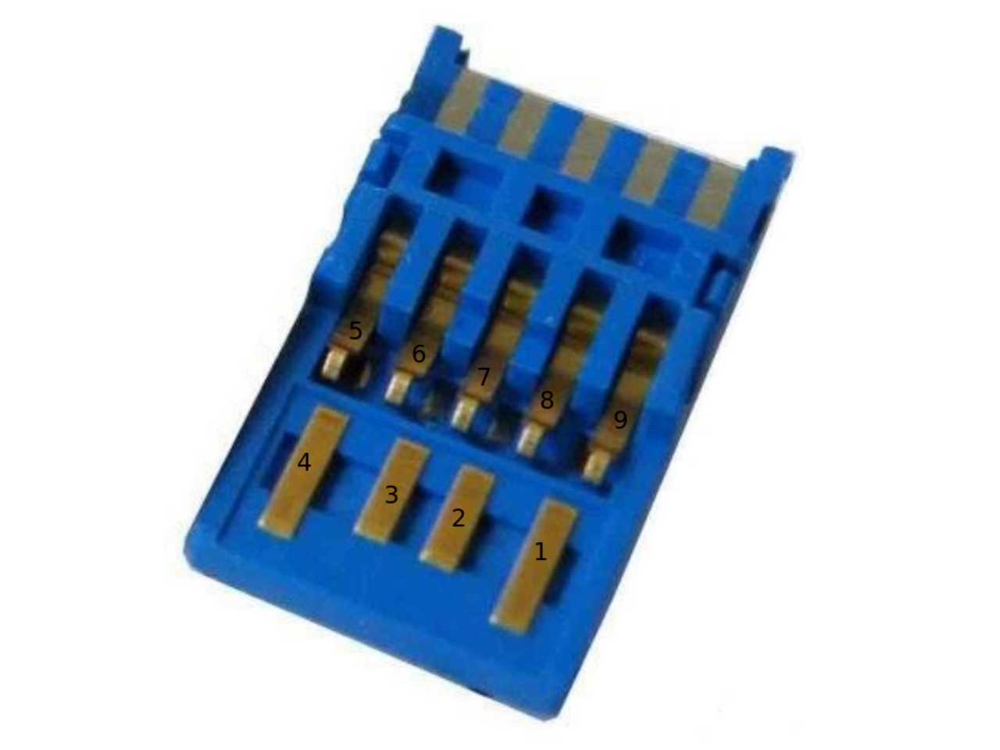

The USB stack

.svg){kind=link}
xHCI replaced three earlier host controller interfaces with one design, and the design is rings of descriptors in host memory plus a doorbell register per device.
Rings are the whole design
The driver allocates a command ring, an event ring, and a transfer ring per endpoint. It writes descriptors into a ring, rings the doorbell, and the controller writes completions into the event ring. A cycle bit distinguishes entries the controller has written this time around from stale ones left from the previous lap, so a ring needs no head and tail pointers shared with the hardware.
Getting the cycle bit wrong gives a driver that works for exactly one lap of the ring and then reads its own history as new events.
Three bugs, each found by the layer above
Enumeration completed and the device descriptor came back as zeros, because the data stage was pointing at a buffer that had been freed. The controller wrote to memory the allocator had handed to somebody else, and nothing faulted.
Configuration succeeded and no data ever arrived, because the endpoint context had the wrong maximum packet size and the controller silently declined to schedule transfers it could not fit.
Data arrived and was corrupt every few packets, because the ring wrapped and the link descriptor at the end had the wrong toggle setting.
None of the three was found by the USB layer. Each was found by whatever was above it noticing that something further up made no sense, which is the argument for having a layer above that checks anything at all.
The shared event ring
All completions arrive on one event ring, so the driver has to route each event to whatever was waiting for it. That is a small dispatch problem in a system with threads and a slightly awkward one here, where the answer is a table of pending transfers keyed by the descriptor address the controller reports.
CDC Ethernet
The class driver above it is CDC Ethernet, which is a straightforward wrapper: bulk in, bulk out, frames on the wire. It is what makes the emulated USB network adapter work, and it is the path the wireless dongle would use if the transport half of that driver were finished. That page says precisely which half is missing.